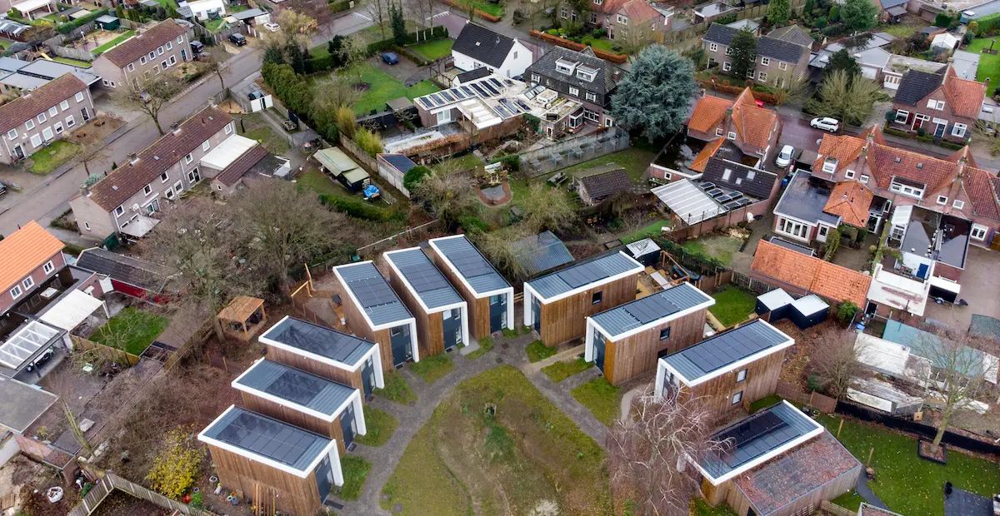

In addition, RV parks do not always allow tiny houses unless they meet the criteria required for RVs.[45] Tiny houses on wheels are considered RVs and are not suitable for permanent residence, according to the Recreational Vehicle Industry Association. From RV Business, "The RVIA will continue to shy away from allowing members who produce products that are referred to as 'tiny houses' or 'tiny homes.' (However, the RVIA does allow 'tiny home' builders to join as long as their units are built to RV or park-model RV standards.)"
03
Challenges of a Tiny Home
One of the biggest obstacles faced by the tiny-house movement is the difficulty of finding a region in which such a house can be constructed.[63] Zoning regulations typically specify minimum square footage for new constructions on a foundation, and for tiny houses on wheels, parking on one's own land may be prohibited by local regulations against camping.[64] While tiny houses have the potential to reduce building and living costs, they can still be costly as a result of the cost of the land they occupy.
Some lower court decisions in the U.S. have struck down zoning laws related to size, which pose an obstacle to tiny housing. One such case was League of South Jersey, Inc v. Township of Berlin, in which the court found that a zoning law related to the size of a home did not advance its stated goal of protecting citizens, causing the law to be repealed.[67] This, and other similar decisions, have assisted in allowing for the propagation of the tiny-house movement despite their infrequency.
